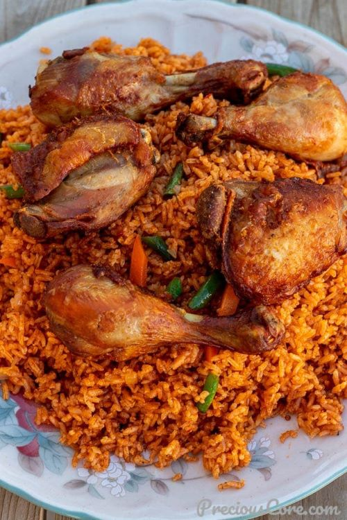
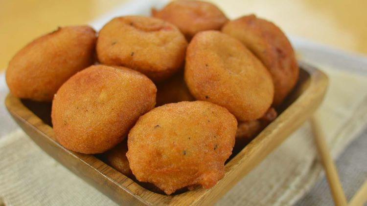
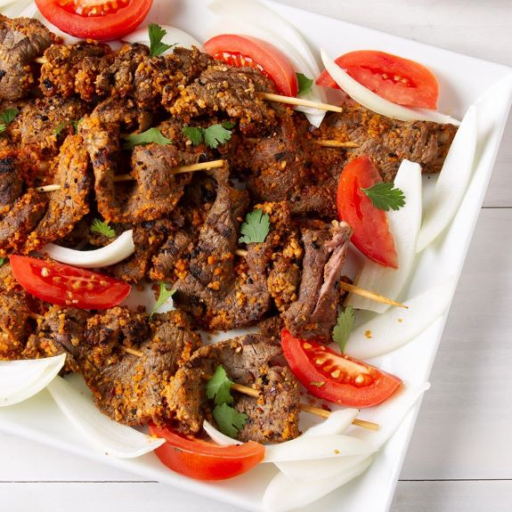

𝓣𝓸𝓹 3 𝓕𝓸𝓸𝓭𝓼 𝓘𝓷 𝓝𝓲𝓰𝓮𝓻𝓲𝓪!
1. Jollof Rice.

How to cook Me!.
- This is One of the most famous foods!.
- You can eat this food almost everywhere!.
- Jollof is believed to have originated from the fishing communities of Saint-Louis island in Senegal and it is prepared by mixing rice with fish,
tomatoes and vegetables and other ingredients.
2. Akara.

- Akara (Black Eyed Peas Fritters) is a very delicious, vegetarian-friendly meal.
- Low in fat.
- They balance blood sugar!.
- Akara, is an all-natural African beancake that contains 109 calories per 123 g serving. This serving contains 6 g of fat, 2 g of protein, and 13 g of carbohydrate.
The latter is 4 g of sugar and 3 g of dietary fiber, the rest is complex carbohydrates.
Suya!

- Suya is believed to have originated with the Hausa people in Northern Nigeria, but it is now popular all over Nigeria and, most of all, in Lagos. Suya is made by putting marinated meat
(which may be gizzard, cow hump, beef or chicken) on skewers and cooking on a barbecue grill fuelled by coal.
- Boosts muscle and bone health. Red meats are rich sources of proteins, the macronutrients that manage the growth and repair of muscles.
- Boosts immunity and iron deficiency.
- The burger is not the actual name.
- McDonald's has a record for selling burgers.
- Burgers are sold in huge quantities around the world.
- Americans eat the most burgers LOL.
- The first burger was sold in 1921!.
Hope you enjoyed this Website ❤️